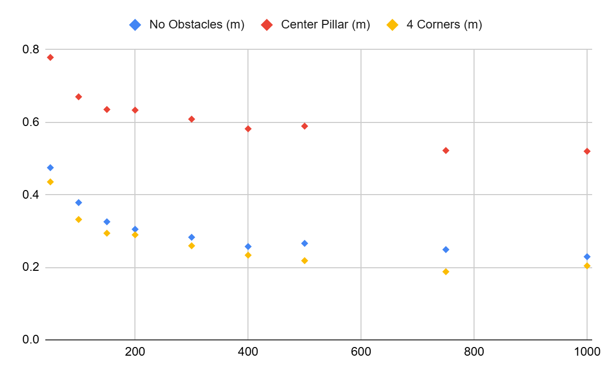
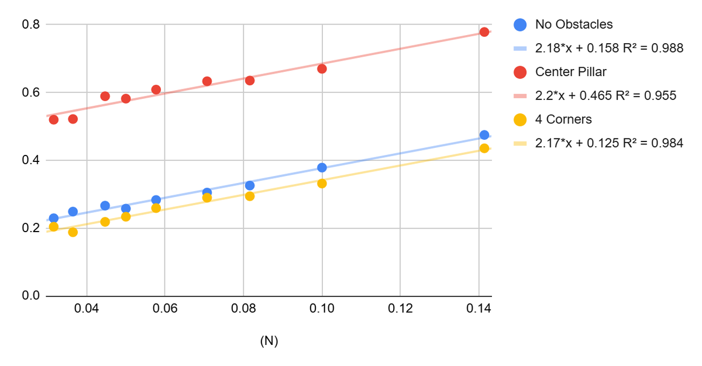
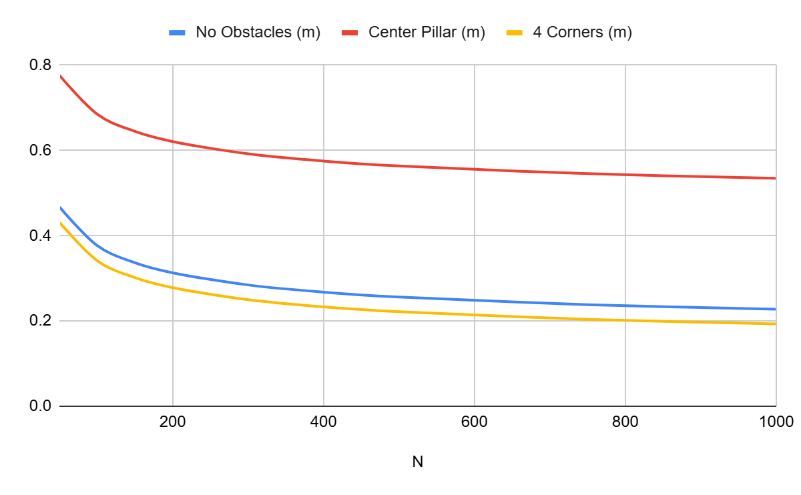
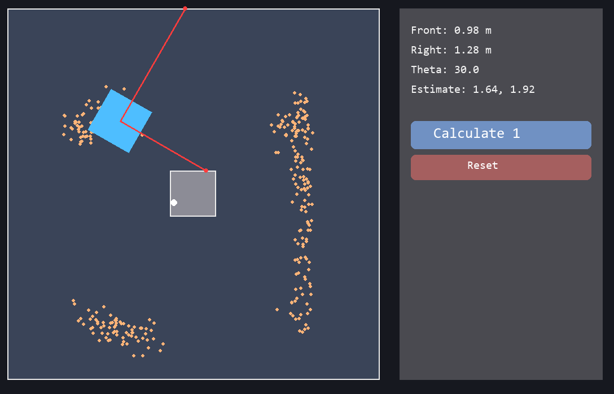

Project 04 · Math investigation · C++
Monte Carlo Localization
A particle filter estimates where a robot is by scattering guesses, scoring each against the sensors, and resampling toward the good ones. This paper asks a narrower question: how does the count of guesses trade off against the error that is left, and where does adding more stop being worth it.
The question
On a VEX field the robot starts an autonomous routine not fully certain where
it is, and that uncertainty compounds through the run. Monte Carlo
Localization handles it with a cloud of N particles, each a
hypothesis for the pose (x, y, θ). More particles cover the
space better but cost compute, so somewhere there is an optimal N.
I modelled the relationship between N and the mean positional
error, and then tested how that relationship shifts as the field gets more
cluttered.
Setup
| Field | 3.65 m square, VEX perimeter |
|---|---|
| Robot | 0.457 m square, max legal size |
| Sensors | 2 optical range (front + right), IMU for heading |
| Particle init | Uniform over the field; heading Gaussian about θ (σ = 8°) |
| Estimate | Mean of the resampled particles |
| Trials | 1000 per N, static (no motion model) |
| Runner | C++ batch sweep; Python + Pygame visualiser |
How it works
The loop
One pass of the algorithm is four steps. It repeats until the cloud of guesses settles on the robot's position.
| 1 · Scatter | Drop N particles at random poses across the field, each a guess for where the robot is. |
|---|---|
| 2 · Score | Work out what each particle's two sensors should read from its pose, compare to the real readings, and weight it with a Gaussian so near matches count for far more. |
| 3 · Resample | Draw a fresh set of particles in proportion to those weights. Good guesses get copied, bad ones drop out, and the cloud contracts toward the poses that fit. |
| 4 · Estimate | Average the survivors. The distance from that average to the true pose is the error for the trial. |
More particles make the average steadier, but each one costs compute and the gain shrinks as you pile them on. The question is where that trade-off lands.
The graphs
What the data shows
For each layout I swept N from 50 to 1000 and ran 1000 randomised
trials at every step, recording the mean positional error. Plotted raw, against
particle count:

That shape is 1/√N: cutting the error in half takes about four
times the particles. It comes from averaging: pool N noisy estimates
and the spread tightens by a factor of √N. So the model is
E(N) = k / √N + c
with k the rate of improvement and c a floor the
estimate cannot beat. If that is right, replotting against 1/√N
should straighten the data into lines. It does:

1/√N: slope k ≈ 2.2
for all three layouts, intercept c = 0.158, 0.465 and 0.125 m,
with R² between 0.95 and 0.99.
Reading k and c off those lines and putting them back
into the model draws the curve each layout is actually on:

k barely moves between layouts, so the rate particles buy down
error is the same everywhere. c, the floor, is what the
environment sets: the center pillar is worst at 0.465 m because it acts as
extra walls and creates more poses that read identically, and the four corner
boxes are best at 0.125 m because they break up the walls that ambiguous
particles spread along.
On this field, somewhere around 400 to 750 particles captured almost all of the accuracy that was on the table. The weighting math, the variance argument, and the full per-environment analysis are in the paper below.
The tool
Watching it fail

The write-up
Full paper
The complete investigation: the weighting and resampling math, the derivation, the regression, and the per-environment analysis in full.
Code: github.com/jjkim08/monte-carlo-simulator – C++ experiment runner plus a Pygame visualiser you can drive around the field.